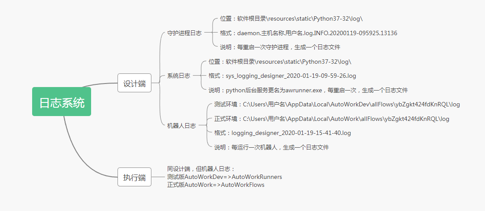

日志模块

上面是设计端架构图，在目前的设计中，日志模块由两部分组成——系统日志和机器人日志。
首先要明确各组成部分。大家能够操作并交互的其实只是前端页面，它和后台功能之间通过 websocket 通信。我们这边要讲的日志模块就是后台功能的一部分。
在前端页面点击运行按钮后，后台功能会先将流程信息编译成 Python 代码再运行，而日志模块在编译和运行阶段都会发挥作用。
系统日志。由安装目录下的
resources\static\awrunner\awrunner.exe产生，保存在resources\static\awrunner\log文件夹下。每次运行设计端软件后会拉起 awrunner.exe，然后它会初始化一个系统日志的实例，当天的日志会创建一个当天日期的文件夹并把写入的日志文件保存其中。只要 awrunner 一直运行，这个实例就会一直存在。系统日志主要负责记录后台功能与前端页面之间的通信信息，如果你点击运行流程却没有反应，前端页面的输出窗口也没有任何输出，不妨查看一下系统日志。（注：后期系统日志功能将删除）机器人日志，或者说流程日志。同样由
awrunner.exe产生，保存在流程文件所在路径的log文件夹下，直接在输出窗口点击右上角的打开日志按钮可以查看最近一次生成的日志信息。主要内容包括前端页面传来的信息、编译期间生成的信息以及机器人运行流程时产生的信息。其中，这些日志中类型为info的日志记录在产生的同时还会通过 websocket 传递给前端页面，并在输出窗口显示。